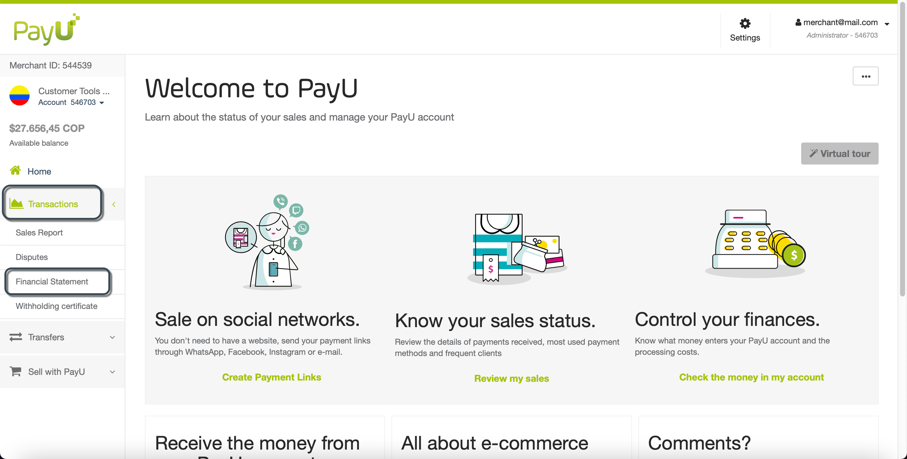
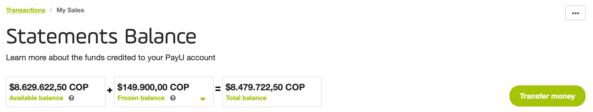
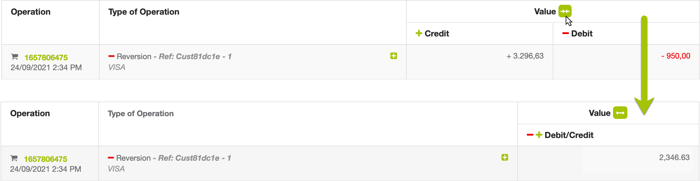
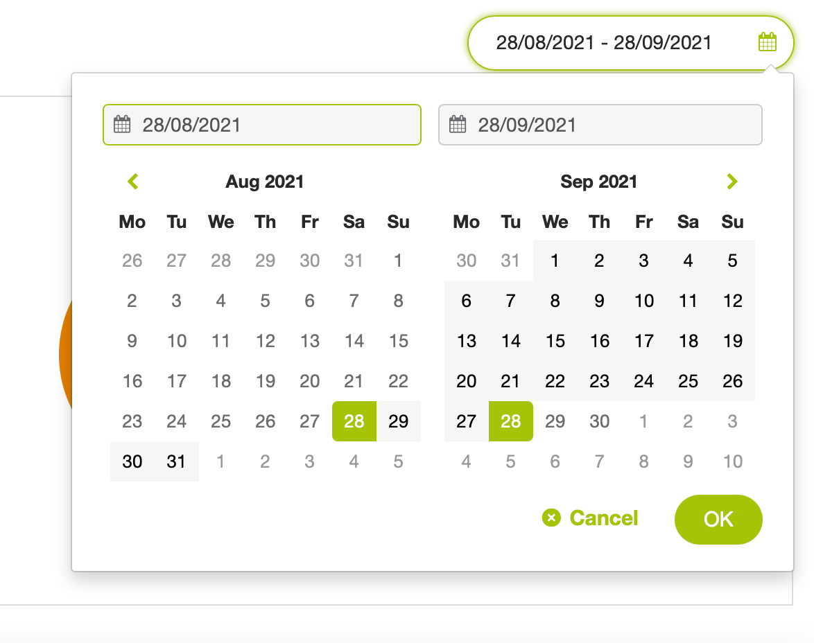
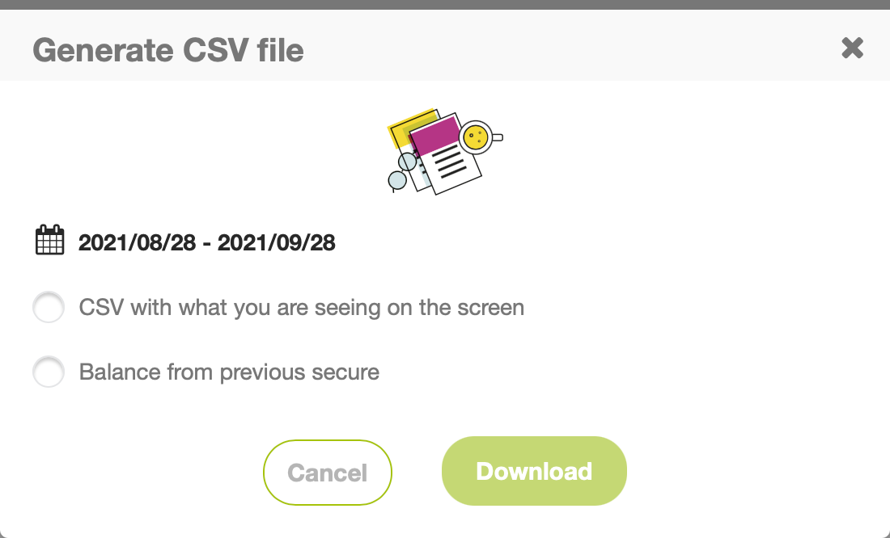

Financial Statement
Note
The Sales Report displayed in the merchant panel are limited to 20 thousand rows for both displaying and downloading. If you need display more rows or columns in the report, contact your sales representative.What is the Financial Statement?
The Financial Statement helps you identify the movements (Commission discounts, transfer fees, reversions) of your PayU account. This report shows the summary of the account, with debits and credits made during the month, and information of the available balance.
Furthermore, the Financial Statement helps the accounting area to reconcile all trade e-commerce operations.
Permission required
To have access to this module, you need to have a profile with the following permissions enabled
- Movements > Statement
- Movements > Download CSV report
This permission must be enabled to let you download the report.
Refer to Profiles and Permissions for more information.
Consult the report
Log into your PayU account. In the left menu, expand the Transactions menu and select Financial Statement. By default, the report shows the operation information* of the last 30 days, from the most recent to the oldest.
*Limited to top 20 thousand records.

The Statements Balance section is divided in three parts as follows:
General Balance
The first part is the general balance where you can see the funds in your PayU account and a button to let you request a transfer to your bank account.
The general balance, which is comprised of:
- Available balance: the total funds received from your sales, after deducting the commission of PayU.
- Frozen balance: the funds that are part of a dispute in process or an unapproved refund requested by your customers.
- Total balance: the money you can transfer to your bank account. It consists of the Available balance minus the Frozen balance.

Sales made chart
In the second part, you can understand the distribution of costs (including taxes and transaction related costs), and analyze a sales chart and a pie chart that summarizes all this information.
The charts shows the information available in the date frame selected.

The pie chart provides the following information:
- Sales Made: total value of your sales before taxes and PayU fee, your income during the consulted period.
- Taxes: additional charges generated according to your tax regime. If your tax regime is different, contact sac@payu.com.
- PayU Fee: PayU processing cost, including the sales percentage plus the flat rate applied to your account.
Report table
In the last part below the charts, you find a table with the credit and debit information of the latest operations. You can see the operation type and the value (credit or debit) of each row.

The report has the following columns:
| Column | Description |
|---|---|
| Operation | ID and date of the operation. |
| Type of Operation | Information of the operation. Depending on its type, the information displayed varies. Click  to expand the detailed values of the operation in the Debit and Credit columns. to expand the detailed values of the operation in the Debit and Credit columns. |
| Credit | Amount credited to your Account. |
| Amount | Amount debited from your Account. |
Note
Click  next to Value label to merge debit and credit; the resultant value debit minus the positive value of credit.
next to Value label to merge debit and credit; the resultant value debit minus the positive value of credit.
For example, if the debit column value is $3.296,63 and the credit column value is $950,00, the resulting column value after merging is $2.346,63.

Filter the report
You can use the search bar above the graph or the calendar to set filters. You can filter by Type of Operation, Sale or Transfer ID, Reference*, or Payment method type*.
* These filters are displayed when the selected Type of Operation is Sale, Reversion, or Chargeback.
To set a filter, click the Filter your search field at the top of the sales made chart.

Configure the values for the filters and click Search. Once you click it, the filter table shows the operations that meet the selected criteria.
Along with these filters, you can also set a time frame when the buyer performed the sale using the dates filter at the top right corner. The date frame defined here

The date range of this filter is three (3) months before the end date. If you exceed this range, The report displays the information of three (3) months after the start date.
To see the information of a given date, set it for both start and end date.
Download the report
To download the report, click the Download button located at the top or at the bottom of the report table.

A pop up window appear where you can select the options to generate the report*.
Note
* If the file format does not meet the your needs, contact your sales executive to know more about the option to send files through SFTP and the templates that we have for this report.The report is automatically downloaded in an Excel (.csv) format. The name of the report uses the following formats:
- CSV with what you are seeing on the screen option: [DownloadDateInMillis]_statement_report_[AccountId].csv
- Balance from previous secure option: [AccountId]_[DownloadDate]_transactions.csv*
* Download date in format dd-mm-yy-hh-mm-ss
In the downloaded report, you can validate all the credits and debits of your account and also, you can reconcile the commissions of PayU that appear in the invoice received monthly.
 PayU commissions and taxes appear in the invoice
PayU commissions and taxes appear in the invoice
To reconcile the information with the sales report, you can use the ReferenceCode variable which appears in brackets in the transaction.

In the generated report you find the following concepts.
| Concept | Description |
|---|---|
| SALES | Approved amount of the transaction. |
| POL_COMMISSION | PayU commission: Fixed percentage established for trade + established fixed value. |
| IVA_POL_COMMISSION | Tax commission. |
| IVA_RETENTION | IVA retention.* |
| RENTA_RETENTION | Retefuente retention.* |
| ICA_RETENTION | ICA retention.* |
| RETENTION SALES | Transaction refund. |
| RETENTION POL_COMMISSION | Refund of the PayU Commission. |
| RETENTION IVA_POL_COMMISSION | Refund of the PayU Commission tax. |
| RETENTION IVA_RETENTION | Refund of the IVA retention. |
| RETENTION RENTA_RETENTION | Refund of the Retefuente retention. |
| RETENTION ICA_RETENTION | Refund of the ICA retention. |
| PAYMENT_ORDER | Transfer of the available Balance to the registered bank account. |
| PAYMENT_ORDER_POL_COMMISSION | Transfer cost. |
| IVA_PAYMENT_ORDER_POL_COMMISSION | Transfer tax. |
| FREEZE_FUND | Frozen balance (refunds or disputes). |
| UNFREEZE_FUND | Release of the frozen amounts. |
| CHARGEBACK | Chargeback or lost dispute. |
| DISCRETIONARY | Discretionary movement or additional credit to the account. |
| * Applies only to transactions with credit card. |